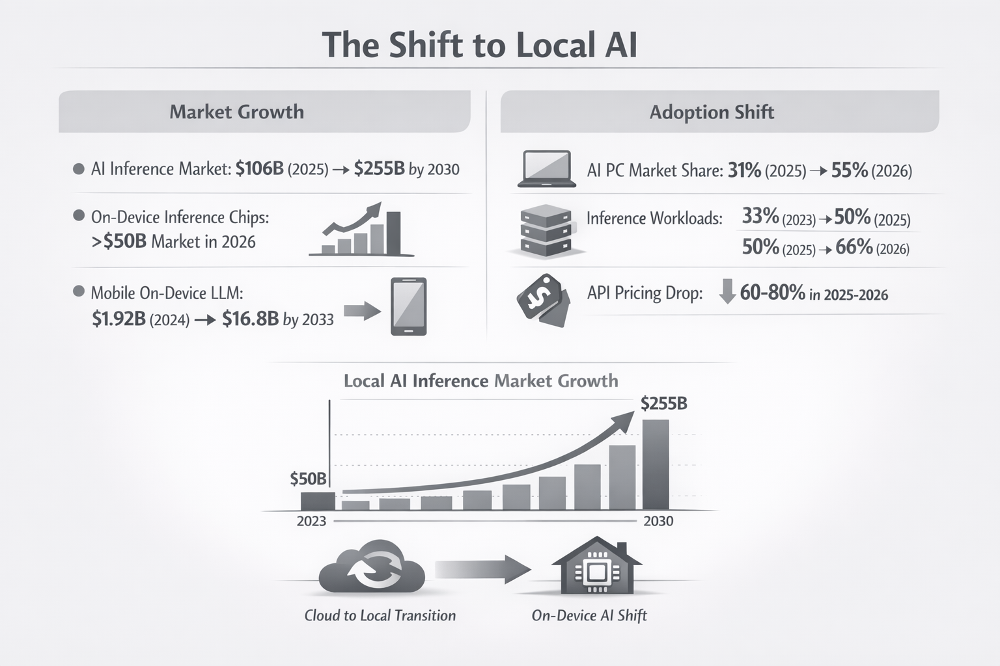

AI subscriptions add up fast. ChatGPT Plus is $20/month. Claude Pro is $20/month. GitHub Copilot is $10/month. Otter.ai is $17/month. If you're using multiple AI tools, you're easily spending $300-500 per year on services that — for many tasks — can now run entirely on your own computer.
The shift happened quietly. Open-source models got good. Apple Silicon made local inference fast. And a growing ecosystem of tools now lets you run AI for writing, coding, transcription, and image generation without sending data to the cloud or paying monthly fees.
This guide covers what you can realistically run locally in 2026, what hardware you need, and where local models genuinely match (or beat) their cloud counterparts.
TL;DR
- Meeting transcription: Whisper locally matches cloud quality — Mono ($50 once) vs Otter.ai ($200/year)
- Writing/chat: Llama 3, Gemma, Mistral via Ollama — free, runs on 8GB RAM
- Code completion: Continue.dev + local model — free vs Copilot ($100/year)
- Image generation: Stable Diffusion — free vs Midjourney ($120/year)
- Break-even: Most setups pay for themselves in 2-4 months
The Real Cost of AI Subscriptions
Let's add up what a typical "AI-enhanced" workflow costs per year:
| Service | Monthly | Yearly | What You Get |
|---|---|---|---|
| ChatGPT Plus | $20 | $240 | GPT-4, writing assistance |
| Claude Pro | $20 | $240 | Claude, long context |
| GitHub Copilot | $10 | $100 | Code completion |
| Otter.ai Pro | $17 | $200 | Meeting transcription |
| Midjourney | $10 | $120 | Image generation |
| Total | $77 | $900 |
Not everyone uses all of these. But even a modest stack — say, ChatGPT Plus and Otter.ai — runs $440/year. That's real money for capabilities that increasingly exist in free, local alternatives.
The Shift to Local AI
This isn't just about saving money — it's a fundamental shift in how AI gets deployed. The numbers tell the story:
Market growth: The AI inference market is projected to grow from $106 billion in 2025 to $255 billion by 2030. On-device inference chips alone will exceed $50 billion in 2026. Mobile on-device LLMs are growing from $1.92 billion (2024) to $16.8 billion by 2033.
Adoption shift: AI-capable PCs will reach 55% market share in 2026, up from 31% in 2025. Inference workloads running locally have grown from 33% of all AI compute in 2023 to 50% in 2025, and are projected to hit 66% in 2026.

Meanwhile, cloud API pricing fell 60-80% in 2025-2026 as competition intensified. The result: local AI became cost-competitive even before factoring in subscription fatigue and privacy concerns.
What Can Actually Run Locally in 2026
Local AI has come a long way. Here's what genuinely works on consumer hardware:
1. Meeting Transcription (Replaces Otter.ai)
The tool: Whisper (via Mono, MacWhisper, or whisper.cpp)
OpenAI's Whisper model runs entirely locally and matches cloud transcription quality. It supports 95+ languages, handles accents well, and produces accurate timestamps.
Mono bundles Whisper with speaker identification, semantic search, and a recording interface — essentially a local Otter.ai replacement. It costs $50 once versus Otter's $200/year, so it pays for itself in about 3 months.

Savings: $150-200/year compared to Otter.ai, Fireflies, or similar services.
2. Writing and Chat (Replaces ChatGPT Plus)
The tools: Ollama, LM Studio, or Jan
Running a local LLM used to require technical setup. Now you download an app, pick a model, and start chatting. The best options in 2026:
- Llama 3 8B: Meta's open model, excellent for general tasks
- Gemma 2 9B: Google's efficient model, great on limited RAM
- Mistral 7B: Strong reasoning, runs fast on most machines
- Qwen 2.5: Particularly good for coding tasks
For everyday writing — emails, brainstorming, summarization, Q&A — these models handle 80-90% of what people use ChatGPT for. The remaining 10-20% (cutting-edge reasoning, very long documents) still favors cloud models.
Savings: $240/year if replacing ChatGPT Plus entirely. Many users keep a free ChatGPT tier for occasional complex tasks and use local models daily.
3. Code Completion (Replaces GitHub Copilot)
The tool: Continue.dev + local model
Continue is an open-source VS Code/JetBrains extension that connects to local models for code completion and chat. Pair it with a coding-focused model like CodeLlama or Qwen 2.5 Coder, and you get Copilot-like autocomplete without the subscription.
The experience isn't quite as polished as Copilot — completions can be slightly slower, and the model occasionally misses context. But for many developers, it's close enough to save $100/year.
Savings: $100/year. Works best for developers who don't need completions in every keystroke.
4. Image Generation (Replaces Midjourney)
The tools: Stable Diffusion via ComfyUI, Automatic1111, or Fooocus
Local image generation has matured significantly. Stable Diffusion XL and SD 3 produce high-quality images, and tools like Fooocus make the workflow almost as simple as typing a prompt.
The catch: you need a decent GPU. NVIDIA cards with 8GB+ VRAM work best. Apple Silicon runs Stable Diffusion but slower than dedicated GPUs. Without a good GPU, this one's harder to replace locally.
Savings: $120/year if you have the hardware. If you'd need to buy a GPU specifically for this, the math changes.
5. Document Q&A and RAG
The tools: PrivateGPT, AnythingLLM, or Khoj
Want to chat with your documents locally? These tools combine local embedding models with local LLMs to create private RAG (retrieval-augmented generation) systems. Upload PDFs, notes, or documents and ask questions — entirely offline.
This replaces paid features in ChatGPT (file upload), Notion AI, and similar tools.
Hardware Reality Check
Local AI isn't free — it trades subscription costs for hardware requirements. Here's what you actually need:
| Use Case | Minimum Specs | Recommended |
|---|---|---|
| Transcription (Whisper) | 8GB RAM, any modern CPU | 16GB RAM, Apple Silicon or dedicated GPU |
| Chat/Writing (7-8B models) | 8GB RAM | 16GB RAM, Apple Silicon |
| Chat/Writing (larger models) | 16GB RAM | 32GB+ RAM or GPU with 12GB+ VRAM |
| Code completion | 16GB RAM | 32GB RAM, fast SSD |
| Image generation | GPU with 6GB VRAM | GPU with 12GB+ VRAM |
The Apple Silicon sweet spot: M1/M2/M3 Macs with 16GB unified memory handle transcription, chat, and code completion well. The unified memory architecture means the RAM is shared with the GPU, making these machines surprisingly capable for local AI.
Windows/Linux: A dedicated NVIDIA GPU (RTX 3060 or better) unlocks faster inference and image generation. Without a GPU, you're limited to CPU inference, which works but is slower.
If you already have capable hardware, local AI is essentially free beyond the software. If you'd need to upgrade, factor that into the break-even calculation.
When Cloud Still Wins
Local models aren't better at everything. Keep cloud subscriptions for:
- Cutting-edge capabilities: GPT-4 and Claude Opus still outperform local models on complex reasoning, very long documents, and nuanced tasks.
- Mobile workflows: Local models require your computer. If you need AI on your phone or across devices, cloud services are more practical.
- Team features: Shared workspaces, collaboration, and admin controls typically require cloud infrastructure.
- Zero setup: Cloud services just work. Local tools require some configuration, even if it's gotten easier.
The practical approach: use local models for daily tasks (80% of usage) and keep a free or minimal cloud tier for occasional complex work.
Getting Started: A Minimal Local AI Stack
Here's a practical starting point that replaces ~$400/year in subscriptions:
For transcription:
Mono ($50 once) — records any app, transcribes locally with Whisper, includes speaker identification and search. Replaces Otter.ai.
For chat and writing:
Ollama (free) + Llama 3 8B — download Ollama, run ollama pull llama3, start chatting. Add a UI like Open WebUI for a ChatGPT-like experience.
For coding:
Continue.dev (free) + Qwen 2.5 Coder — install the VS Code extension, point it at your local Ollama instance.
The Privacy Bonus
Beyond cost savings, local AI keeps your data private by default:
- Your meeting recordings stay on your device
- Your documents aren't uploaded for training
- Your code doesn't pass through third-party servers
- You work offline without interruption
For sensitive work — legal, medical, financial, or simply personal — this matters more than the subscription savings.
Is It Worth It?
If you have modern hardware (2020 or newer Mac, or a PC with a decent GPU), local AI makes financial sense within a few months. The tools have matured past the early-adopter phase into genuine daily-driver territory.
If you'd need significant hardware upgrades, the math is less clear. A new GPU costs $300-500 — that's 1-2 years of some subscriptions. At that point, you're buying into local AI for reasons beyond pure cost savings (privacy, offline access, ownership).
For most people with existing capable hardware, the answer is simple: try the free tools (Ollama, Continue.dev) and see if they fit your workflow. If they do, the subscription cancellations follow naturally.
Try Mono free
One recording limit, no account needed. $50 to unlock everything — local AI transcription, speaker ID, semantic search, no subscription.